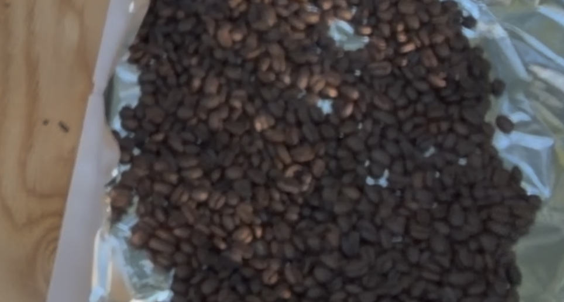
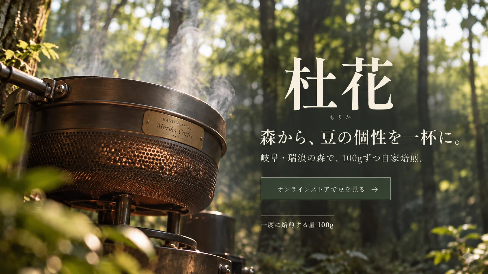
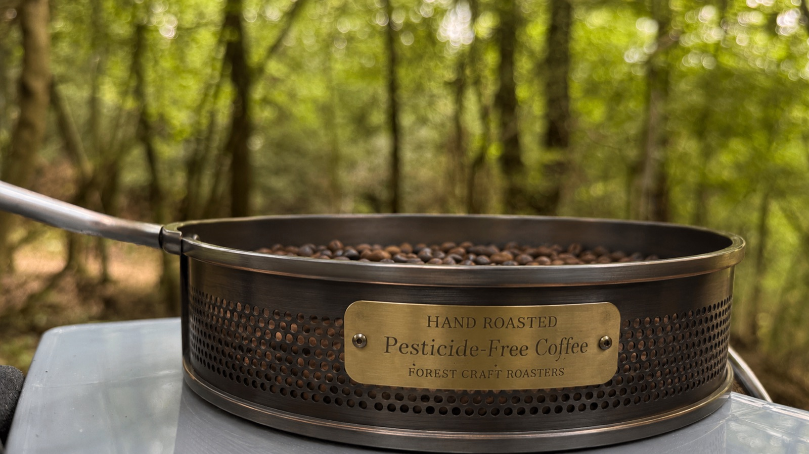
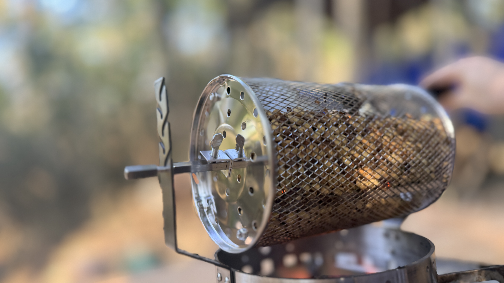
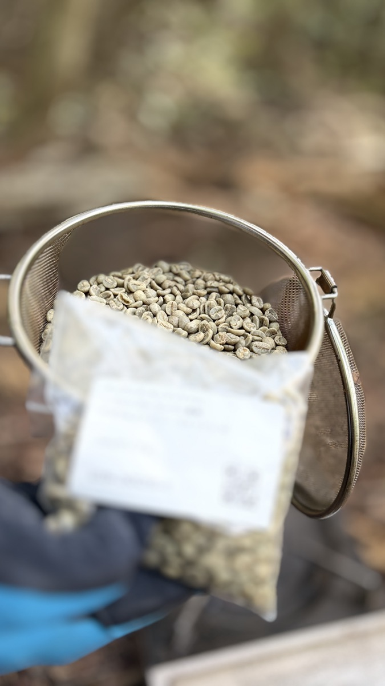

roast log
森の焙煎記録

ROAST NOTE / 04
タンザニア
キリマンジャロ
TANZANIA · KILIMANJARO
タンザニア キリマンジャロのウォッシュトを、ややフレンチローストに仕上げました。
- 精製
- ウォッシュト
- 焙煎度
- ややフレンチロースト

森から、豆の個性を一杯に。
岐阜・瑞浪の森で、100gずつ自家焙煎。
月産最大500g — 一度に焙煎する量 100g
concept
新しいロースターと、手の感覚で。
火加減を確かめながら、一籠ずつ。
良い豆を、正直な方法で焼く。
それが杜花のすべてです。

月産MAX500g限定 — 一度に焙煎できるのは100gだけ
花のような香り、柑橘の余韻。
焙煎するたびに表情が変わる。
一番好きな豆です。
¥1,600/ 100g 満遍なく火を通すため、一度に焙煎できるのは100gだけ。
甘く、まろやか。
誰にでも寄り添う、
やさしいコーヒー。
¥1,600/ 100g 満遍なく火を通すため、一度に焙煎できるのは100gだけ。
ナッツの香ばしさ、
深くて落ち着いた苦味。
朝に飲みたい一杯。
¥1,600/ 100g 満遍なく火を通すため、一度に焙煎できるのは100gだけ。
VOICE · ETHIOPIA
ここからは商品説明ではなく、エチオピアを実際に飲んだ方からいただいた感想です。
ETHIOPIA · 試飲コメント
カップに顔を近づけたとき、今までにない香りがしました。爽やかというか、フルーティというか……うまく言葉にできないけれど、印象に残る香りです。後味もしっかり残って、とてもおいしい。また飲みたくなるコーヒーでした。
ROASTER

炭火では火加減にムラが出やすかったため、焙煎を安定させるためにガス式ロースターへ切り替えました。
10月11日の導入記録を見る →roast log

ROAST NOTE / 04
TANZANIA · KILIMANJARO
タンザニア キリマンジャロのウォッシュトを、ややフレンチローストに仕上げました。
roast log
ROAST NOTE / 03
A NEW TOOL FOR HOME ROASTING
炭火での焙煎は、火加減にムラが出やすい。
そこで焙煎を安定させるため、ガス式ロースターへ切り替えました。
新しい火で豆の個性をどう引き出せるか、これから少しずつ試していきます。
※ 2026年10月11日、新型ロースターを導入。豆の種類・焙煎量・焙煎度は記載していません。
roast log
ROAST NOTE / 02
ETHIOPIA · YIRGACHEFFE
エチオピア・イルガチェのウォッシュドを100g焙煎。
浅煎りに仕上げ、豆の香りが立つことを重視して火を入れました。
※ 今回は焙煎内容を中心に記録しています。
roast log

TEST ROAST / 01
TANZANIA · KILIMANJARO
今日の一籠は、ンゴロンゴロの生豆。
焙煎前の色、粒の揃い、手触りを確かめてから、
瑞浪の森で備長炭の直火へ。蓋付きの網籠を振り、
音と香りが立つ瞬間を追いました。
※ 生豆の個性を確かめるための試験焙煎です。販売時期は未定です。
coffee notes
豆のこと、焙煎のこと、淹れるときのこと。コーヒーの背景にある小さな話を集めました。
about morika
contact
商品や焙煎についてのご質問はこちらからどうぞ。確認後、メールでお返事します。